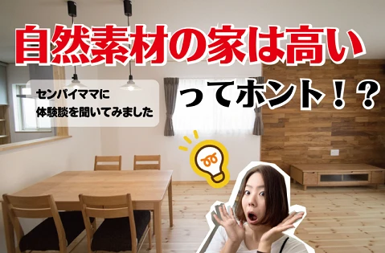
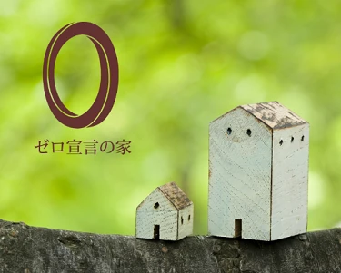
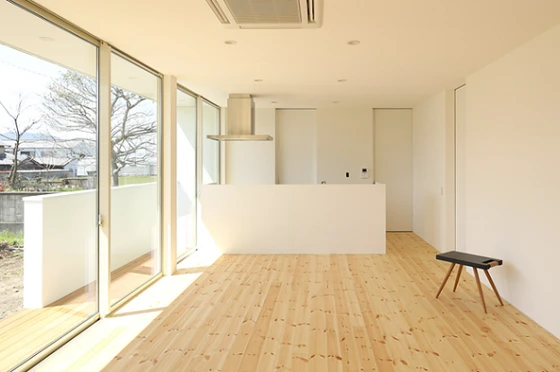
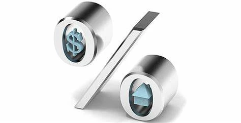
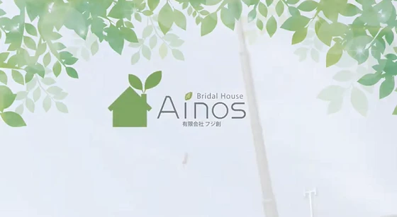
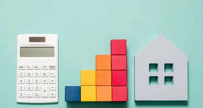

家づくりと同時に考えるべきお金のこと
こんにちは。富山で自然素材にこだわるホンモノの家、フジ創アイノスです。 もしもの時や将来のことを考えて、 お金を貯めていくためは、収入を増やすことはもちろん、 貯蓄の方法をどうするのかも大切です。 ▼銀行でお金は増えるの
続きを読む →FUJISOU AINOS JOURNAL
家づくりのこと、暮らしのこと。
日々の想いを、お伝えします。
家づくりについて 556件 ／ 新しい記事から 17・24ページ
こんにちは。富山で自然素材にこだわるホンモノの家、フジ創アイノスです。 もしもの時や将来のことを考えて、 お金を貯めていくためは、収入を増やすことはもちろん、 貯蓄の方法をどうするのかも大切です。 ▼銀行でお金は増えるの
続きを読む →こんにちは。富山で自然素材にこだわるホンモノの家、フジ創アイノスです。 ▼意外と思い付かない防犯対策 玄関ドアを施錠することは当たり前として、 他に一体どのような防犯対策が考えられるでしょうか。 防犯カメラを設置する。
続きを読む →こんにちは。富山で自然素材にこだわるホンモノの家、フジ創アイノスです。 先日隣町で空き巣事件が起きました。 住民が家を空けたほんの少しの間の出来事だったそうです。 "昔の家は玄関の鍵なんてかけなかった" 近所にどんな人が
続きを読む →こんにちは。富山で自然素材にこだわるホンモノの家、フジ創アイノスです。 アレルギー持ちの人にとって、 ホコリは鼻水とくしゃみを引き起こす原因となります。 家の中で特にホコリが溜まりやすいのが、 テレビ周りの配線と、モデム
続きを読む →こんにちは。富山で自然素材にこだわるホンモノの家、フジ創アイノスです。 最近レジ袋が有料になったり、プラスチックのストローをなくすお店が 出てきたりといった変化がありました。 気づけば現代の私たちの日常生活は、プラスチッ
続きを読む →
こんにちは。富山で自然素材にこだわるホンモノの家、フジ創アイノスです。 こちらのお家はとてもシンプルで美しい外観ですが、 その理由は、白と木の配色の美しさもありますが、 なにより余分な部材が限りなく少ないことです。 玄関
続きを読む →こんにちは。富山で自然素材にこだわるホンモノの家、フジ創アイノスです。 誰もが羨ましがるようなお洒落でカッコイイ家にするために、 欠かせない絶対的な条件が "美しい外観であること" ではないでしょうか？ しかし、間取りの
続きを読む →
こんにちは。富山で自然素材にこだわるホンモノの家、フジ創アイノスです。 ▼むやみに窓をたくさんつくることはデメリットになる 前回の話でわかるように、ただ単純に南に窓をつくれば、 それだけで明るくなるわけでもないし、 窓を
続きを読む →こんにちは。富山で自然素材にこだわるホンモノの家、フジ創アイノスです。 仮に、このような分譲地に家を建てるとすると、 このような配置で家を建てることになります。 しかし、このような配置で家を建てることを前提とした場合、
続きを読む →こんにちは。富山で自然素材にこだわるホンモノの家、フジ創アイノスです。 多くの新婚カップルは、最初は賃貸に住み、 いずれ頭金を貯めてからマイホームを購入しようと考えがちです。 ですが、家賃を払いながら頭金を十分に貯めるの
続きを読む →こんにちは。富山で自然素材にこだわるホンモノの家、フジ創アイノスです。 結婚したらとりあえずアパートを借りて住む、というのが常識に思われています。 ですが、結婚が決まったらすぐに家を建てることをおすすめします。 大きな家
続きを読む →
こんにちは。富山で自然素材にこだわるホンモノの家、フジ創アイノスです。 ママのための情報サイト「ママスキー」に、2019年にアイノスのモデルハウスを 購入していただいたお客様のインタビュー記事が掲載されました。 自然素材
続きを読む →
こんにちは。富山で自然素材にこだわるホンモノの家、フジ創アイノスです。 断熱性、気密性、耐震性などは、そこに住まう人々の健康や安全につながる大きな要素です。 『住』は「食」と同じか、それ以上に健康に直結していると言われて
続きを読む →
こんにちは。富山で自然素材にこだわるホンモノの家、フジ創アイノスです ▼コンパクトなのに明るくて開放的でゆったりしている秘密 こんなにコンパクトなお家なのに、 明るく開放的でゆったりしているように感じるのは、 このお家が
続きを読む →こんにちは。富山で自然素材にこだわるホンモノの家、フジ創アイノスです。 前回紹介したお家の続きです。 一般的な家は、洗面と脱衣が一緒になっていることが当たり前ですが、 こちらのお家は洗面室と脱衣室を仕切り、 かつ脱衣室だ
続きを読む →こんにちは。富山で自然素材にこだわるホンモノの家、フジ創アイノスです。 "床面積23坪弱の家"と聞くと、 とても小さくて狭い家を想像してしまうかもしれません。 家族4人がその広さのお家で暮らすとなれば、 なおのこと「そん
続きを読む →
こんにちは。富山で自然素材にこだわるホンモノの家、フジ創アイノスです。 前回の続きで、出て行くお金をいかに抑えるかを考えます。 手元に残るお金を増やすためには、 収入を増やしつつ、支出を減らすようにしなければいけないので
続きを読む →こんにちは。富山で自然素材にこだわるホンモノの家、フジ創アイノスです。 最近働き改革が進んでいることで、 もっと休みを取った方がいい！とか、 残業も減らした方がいい！という流れになっていっています。 それは嬉しいことなの
続きを読む →
こんにちは。富山で自然素材にこだわるホンモノの家、フジ創アイノスです。 youtubeのフジ創アイノスチャンネルで、施工風景を公開しています。 その家に合った施工方法を、職人と設計士が話し合って工事を進めます。 施工方法
続きを読む →
こんにちは。富山で自然素材にこだわるホンモノの家、フジ創アイノスです。 前回、50坪の土地があれば充分な広さの平屋を建てられる、とお話しました。 しかし、不動産屋も住宅会社も、 「家＝2階建て」を基本に考えてしまっている
続きを読む →こんにちは。富山で自然素材にこだわるホンモノの家、フジ創アイノスです。 ワンフロアで生活動線がスムーズ、老後に階段の上り下りをする必要がない、 台風や地震に強い、などのメリットから、平屋を建てる方が増えてきています。 し
続きを読む →こんにちは。富山で自然素材にこだわるホンモノの家、フジ創アイノスです。 フジ創アイノスの家づくりは、お客様のご希望に合わせた３つのスタイルを提案しています。 アイノスのおうち 自然素材のナチュラルな家。 無垢材、しっくい
続きを読む →
こんにちは。富山で自然素材にこだわるホンモノの家、フジ創アイノスです。 前回、住宅ローンを組んだ際には生命保険を見直すべきというお話をしました。 日本は諸外国と違い、 国民みんなが保険制度の下で健康保険をはじめ公的な保障
続きを読む →こんにちは。富山で自然素材にこだわるホンモノの家、フジ創アイノスです。 家づくりの際、コスト削減のために見直していただきたいことの一つが "生命保険"です。 住宅ローンを借りるときに、 必然的に "団体信用生命保険" と
続きを読む →